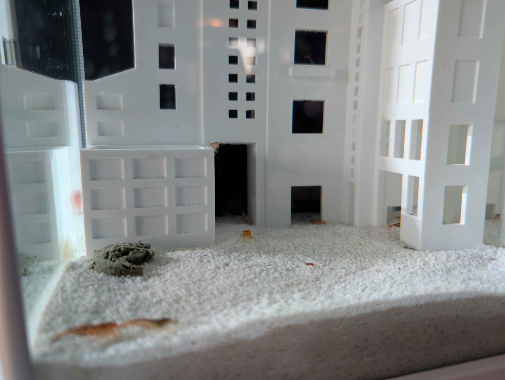
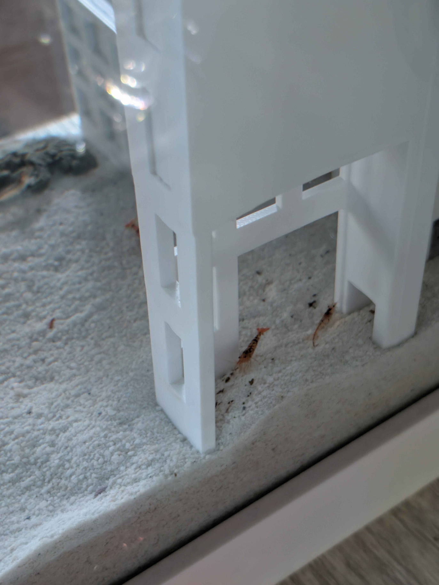
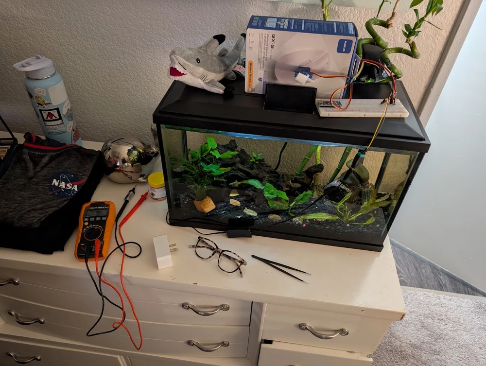
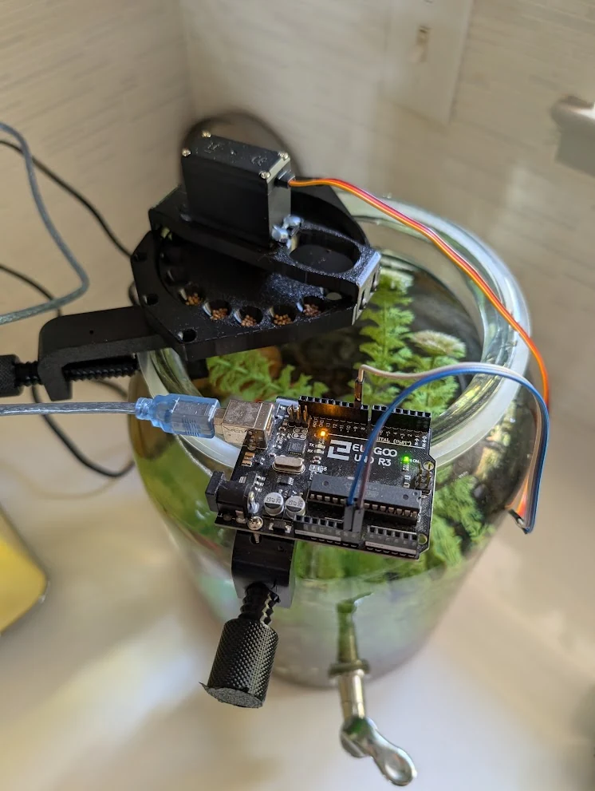
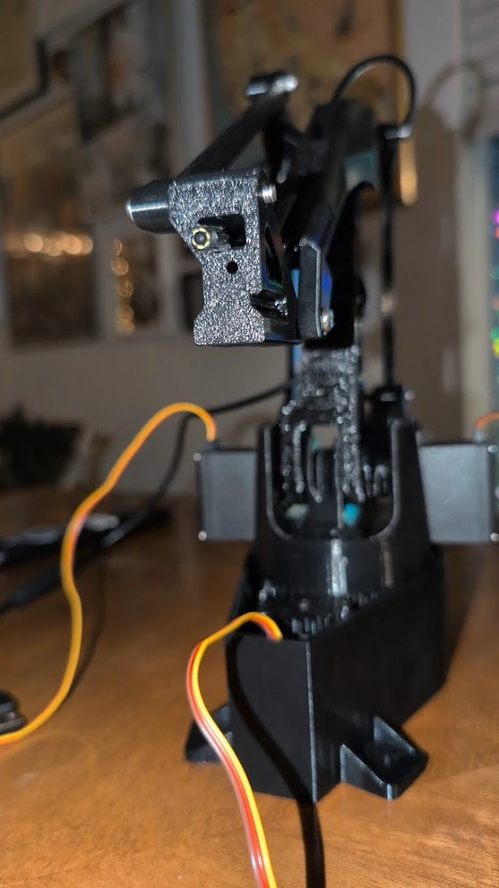

Cameras & tank nodes
Local cameras and Raspberry Pi nodes keep each view associated with its aquarium.
Sensing hardware / Software integration
Networked aquariums, habitat monitoring, and a shared observation hub.
I am developing Sync Tank as a local network for aquarium observation and habitat monitoring. Raspberry Pi tank nodes connect cameras and devices to a shared hub, with a spatial model that relates each camera view to its position in the tank.
The work spans camera hardware, control electronics, interface development, and physical testing. SEE SEA TV presents feeds, while Sightings saves observations with their tank and camera context.
The public site includes build notes and a photo-reference tank builder. The builder is a planning tool; live feeds and device controls run through the local hub.
Reeflex uses the EEZYbotARM Mk2 mechanical design as its basis.
WHY SYNC TANK
Sync Tank connects aquarium footage to a tank, a camera position, and a moment in time. That makes it easier to revisit an observation, compare views, and notice changes without watching every feed continuously.
Local cameras and Raspberry Pi nodes keep each view associated with its aquarium.
Camera positions and habitat landmarks give each view physical context.
The hub presents feeds and saves observations with their camera, tank, and time.
SYNC TANK / OBSERVATION DESK

SYSTEM PHOTO / NOT A LIVE FEED
This area is reserved for a public viewing stream. The tank cameras currently connect through the local Sync hub.
Explore the system ↗Try the tank builder ↗FROM EXHIBITION TO LOCAL SYSTEM
The 2025 exhibition build brought the aquarium, cameras, mechanisms, and local display into one installation. Development around Open Sauce 2026 expanded the project into a shared controller for two tanks, spatial layouts, and observation tools.
The exhibition setup makes the hardware visible. The ongoing software work gives the footage context and keeps observations useful after the demonstration.
Open Sauce collection ↗ EXPAND ↗EXPAND ↗
EXPAND ↗EXPAND ↗ EXPAND ↗
EXPAND ↗ EXPAND ↗
EXPAND ↗
EXPAND ↗
EXPAND ↗Early experiments with aquarium electronics, automated feeding, and a printed camera arm preceded the networked habitat-monitoring system.


